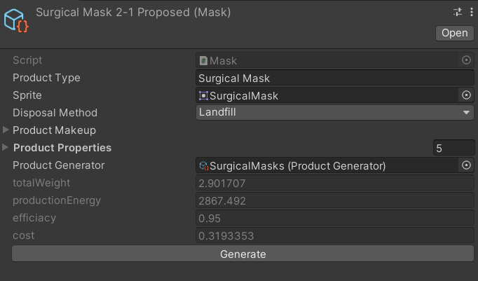
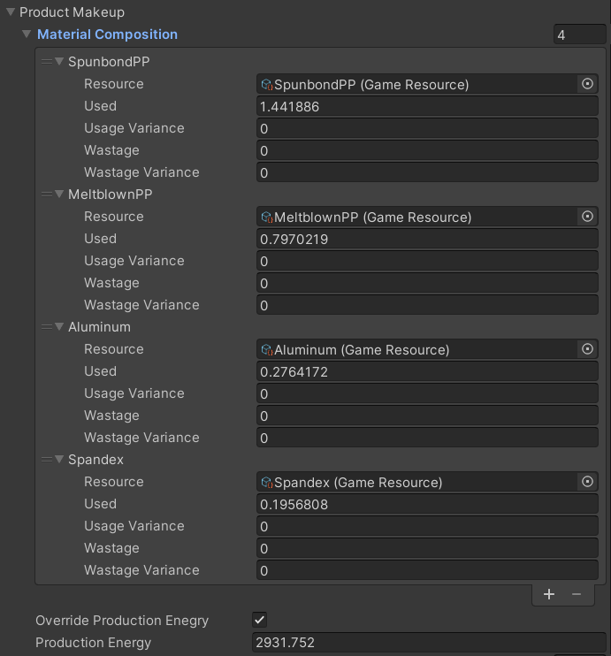
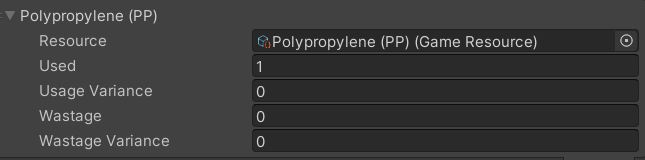
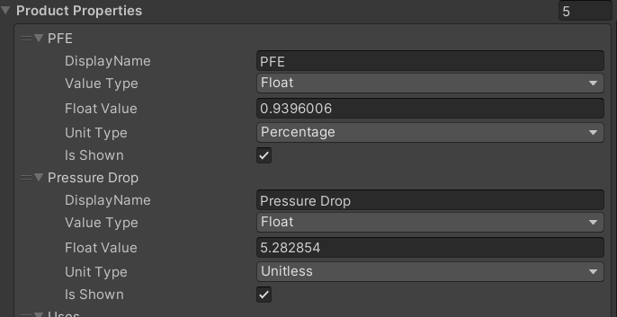

Product Scriptable Object
A Product scriptable object contains all the relevant information of a product included in a proposal.

Generally all products consists of a few parts:
Product Type- the product type, shown to the playerSprite- a picture of the productDisposal Method- how the product is to be disposed of after its lifespan (currently unused)Product Makeup- what the product is made up ofProduct Properties- other relevant details to the product.
Optionally, a Product Generator attached and used to generate/regenerate a product.
Product Makeup

The product makeup of a product describes how a product is made. It is made up of:
MaterialComposition- a list of resources used in the making of the productOverride Production Energy- whether to override the calculated energy needed to produce the productProductionEnergy- the energy required to manufacture the product.
The total energy needed to produce a product is calculated in this manner.
- if
Override Production Energyis not selected: the calculated energy required to obtain the resources inMaterialComposition, plus the value ofProductionEnergy
(i.e. energy required to obtain the necessary resources + energy required to manufacture the product) - if
Override Production Energyis selected: the value ofProductionEnergy
Resource Usage

Within the MaterialComposition of a product, a resource usage is broken down into:
Resource- a GameResource scriptable object, describing the resource being usedUsed- the amount, in grams, of the resource being used in producing 1 unit of the productUsage Variance- (only for Product Generators) the variance of the amount usedWastage- how much of the resource is wasted during the production process of 1 unit of the product e.g. scrap cloth from cutting fabricWastage Variance- (only for Product Generators) the variance of the wastage produced.
The Game Resource Scriptable Object
See The Game Resource Scriptable Object for more details.
Product Properties

The product properties are a list of Details that capture a relevant detail of a product. Each Detail is consists of:
Display Name- the text to be shown to the player in-game (e.g. "efficiency", "humidity")Value Type- the type of value that the detail holds, be it a floating point number, an integer or a stringFloat Value/Integer Value/String Value- the value describing the detail (e.g. 5.2, "very high")Unit Type- if theValue Typeis a number, the type of measurement it is (e.g. weight, length, etc.)Is Shown- whether the detail is shown to the player in-game or hidden from the player